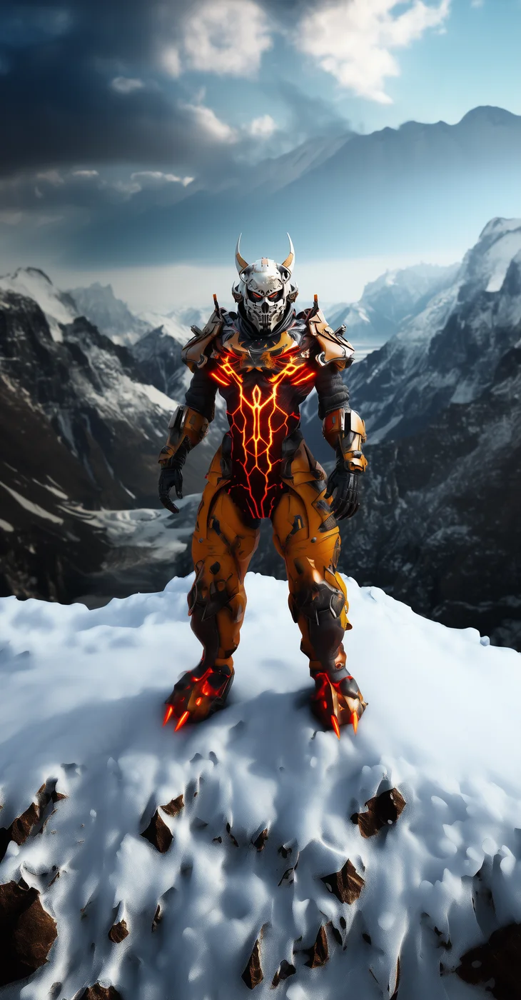

©
©

Bryg
Honor Warden · Elite
Bryg looks like stone and fights like a landslide. The Obsidian Shell bursts outward in a storm of shards, piercing the center and battering the flanks. Bryg guards the deepest cave of the Honor Warden, where the bond-stones of the fallen are kept.